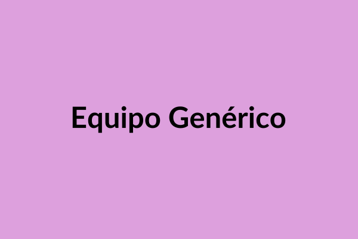

Nuestra Misión
Nuestra misión es proporcionar [tipo de servicio/producto] de alta calidad que [beneficio principal]. Nos esforzamos por [acción clave] para [resultado deseado].

Bienvenidos a la página "Acerca de". Aquí, exploraremos la visión y misión que impulsan nuestro trabajo. Nos dedicamos a [describir área principal del proyecto] con el objetivo de [mencionar objetivo clave]. Creemos firmemente en [mencionar valor o principio fundamental].

Nuestra historia comenzó en [año o evento], y desde entonces, hemos estado comprometidos con la excelencia y la innovación. Cada paso que damos está guiado por la pasión por [mencionar algo que les apasione].
Nuestra misión es proporcionar [tipo de servicio/producto] de alta calidad que [beneficio principal]. Nos esforzamos por [acción clave] para [resultado deseado].
Visualizamos un futuro donde [estado ideal o aspiración]. Queremos ser líderes en [industria o campo] y contribuir significativamente a [impacto deseado].